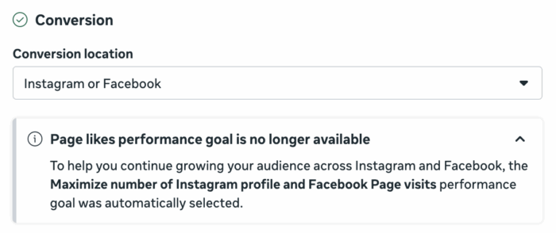
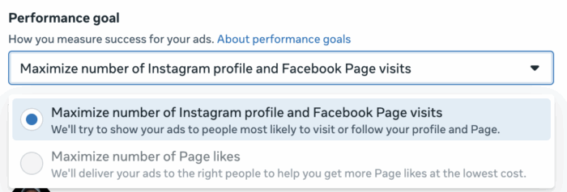

Meta прибрала рекламу на лайки сторінки. Кінець епохи
В одному з рекламних акаунтів з'явилось повідомлення: "Page likes performance goal is no longer available". Ціль Engagement, конверсія на Instagram або Facebook - і опція "максимізувати кількість лайків сторінки" просто недоступна. Заблокована.

Замість неї Meta автоматично підставляє "Maximize number of Instagram profile and Facebook Page visits".

Чи варто було взагалі гнатись за лайками?
Чесно - ні. Реклама на лайки сторінки ніколи не була особливо розумним вкладенням. Ти платив за те щоб люди натискали "подобається" - і на цьому все.
Органічне охоплення на Facebook впало ще багато років тому. Тисяча лайків на сторінці не означала тисячу людей які бачать твої пости. Бізнес платив за ілюзію аудиторії.
Але це не скасовує того факту, що прибрали щось що існувало з самого початку Facebook реклами. Реклама на лайки - це буквально одна з перших стратегій яку взагалі можна було запустити в Facebook Ads. Ще до того як з'явився нормальний трекінг конверсій, ще до пікселя - ти міг рости через лайки.
Що тепер замість цього
Meta пропонує "Maximize number of Instagram profile and Facebook Page visits" - тобто замість того щоб люди натискали лайк, вони переходять на сторінку або профіль.
Логічно. Відвідування профілю - більш реальна дія, яку можна відстежити і яка хоч трохи корелює з інтересом до бренду. Лайк на сторінку - це просто кнопка яку натиснули один раз і забули.
Що це означає на практиці
Якщо ти або твої клієнти досі запускали кампанії на лайки - саме час переглянути підхід. Тепер цієї опції просто немає.
Якщо ніколи не запускав - нічого не змінилось, ти нічого не втратив.
Це оновлення поки фіксується не у всіх акаунтах - можливо Meta ще тестує або поступово розгортає. Але якщо вже бачиш це повідомлення - все, опція пішла.